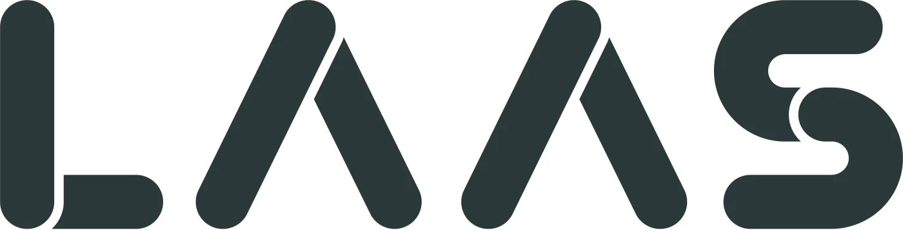
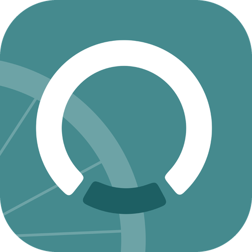

The team dashboard in its own window, with notifications and an unread badge. It updates by itself, so you only install it once.
10 seconds, no security warnings
About a minute
Why the extra step: the app isn't notarized by Apple yet, so macOS asks once. It's our own app and only opens LAAS HQ. After the first time it opens like any other app.
About a minute
Why the warning: SmartScreen warns about apps that aren't code-signed yet. It's our own app and only opens LAAS HQ.